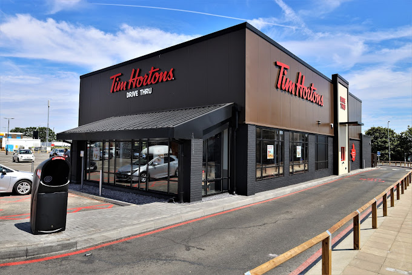
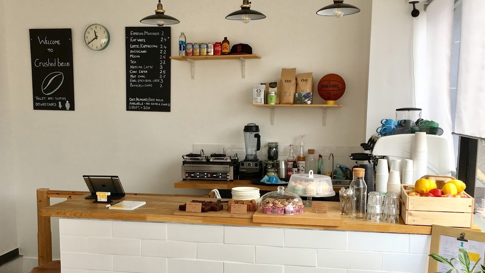
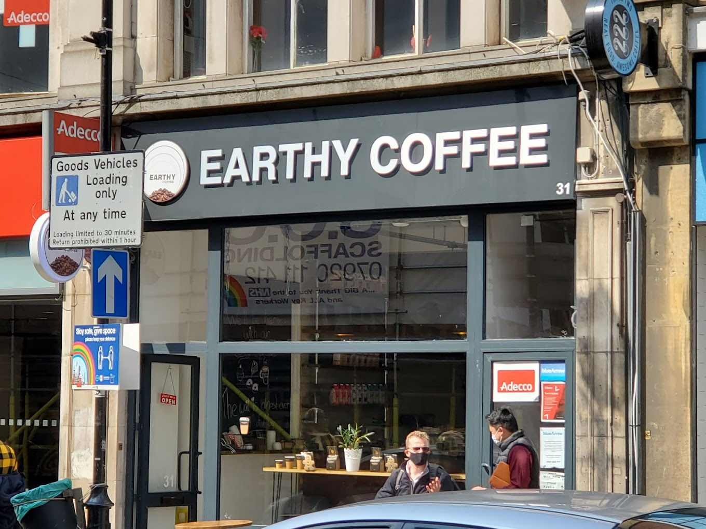

Tim Hortons café

Description: Canadian chain for signature premium-blend coffee, plus light fare, pastries & breakfast sandwiches.
How to Get There
Address: Royale Leisure Park, Kendal Ave, London W3 0PA
Closest Train Station: Park Royal
Crushed Bean café

Description: We're a small passionate team with big ideas..
How to Get There
Address: Crushed Bean, 81 High St, Croydon CR0 1QE
Closest Train Station: East Croydon
Earthy Coffee café

Description: We are an independent Artisan Coffee Shop based in the heart of Croydon, serving freshly ground handcrafted coffees, and delicious breakfast and brunch options.
How to Get There
Address: Earthy Coffee, 31 George St, Croydon CR0 1LB